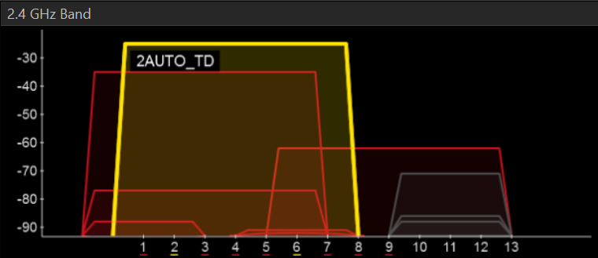

Om meerdere draadloze netwerken naast elkaar te laten bestaan, zijn de 2,4 GHz-band en de 5 GHz-band onderverdeeld in kanalen. Ideaal heeft elk netwerk een eigen kanaal dat niet overlapt met dat van de buren. De zenders storen elkaar dan niet en de communicatie verloopt sneller.
In de praktijk zijn er vaak zoveel netwerken in de buurt dat ze elkaar toch overlappen. In inSSIDer zie je dat meteen: elk netwerk is een boog, en waar de bogen over elkaar vallen delen ze dezelfde ruimte.

In het voorbeeld hierboven zit ons netwerk op de kanalen rond 2 en 6. Op kanaal 8 of 12 is er ook overlapping, maar het netwerk waarmee je daar deelt is zwakker, en een zwak concurrerend signaal hindert je minder.
Je stelt het kanaal in bij de wireless settings van de router, per band apart.
Volledig vrij zit je zelden, dus kies met wie je overlapt. Overlappen met een zwak signaal ver weg kost je minder dan overlappen met een sterk netwerk vlak naast je.